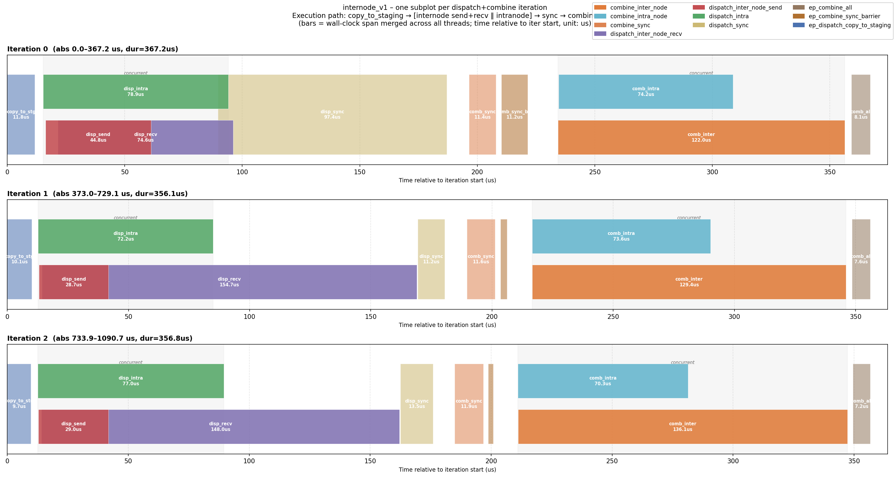

MORI-EP Benchmark
Table of Contents
Intra-node
cd /path/to/mori
export PYTHONPATH=/path/to/mori:$PYTHONPATH
# Benchmark performance
python3 tests/python/ops/bench_dispatch_combine.py
Profiling intranode kernels
1. Build with profiler enabled
ENABLE_PROFILER=ON pip3 install -e . --no-build-isolation -v
2. Clear the JIT cache
rm -rf ~/.mori
3. Run the profiling job
export ENABLE_PROFILER=ON
torchrun --nnodes=1 --nproc_per_node=8 \
tests/python/ops/bench_dispatch_combine.py --cmd profile
Traces land as trace_intranode_rank<rank>_<timestamp>.json in the current working directory — one file per rank. Open them in Perfetto UI or analyze with analyze_ep_kernel_trace.py as described in the Profiling EP Kernels section.
Inter-node
Run the following command on each node and replace node_rank with its actual rank. master_addr should be the hostname or IP of the rank 0 node. GLOO_SOCKET_IFNAME should be set to the TCP socket interface you want to use.
export GLOO_SOCKET_IFNAME=enp81s0f1
export MORI_RDMA_DEVICES=^mlx5_0,mlx5_1 # Optional: use `^` prefix to exclude specified devices
torchrun --nnodes=2 --node_rank=0 --nproc_per_node=1 \
--master_addr="10.194.129.65" --master_port=1234 \
examples/ops/dispatch_combine/test_dispatch_combine_internode.py --bench
The output includes total number of tokens received, total number of RDMA tokens received, and total bandwidth (XGMI + RDMA combined). To calculate RDMA-only bandwidth:
RDMA BW = Total BW × (RDMA tokens / Total tokens)
NIC Selection
For RoCE networks, you can specify which RDMA devices to use with the MORI_RDMA_DEVICES environment variable:
Include specific devices:
MORI_RDMA_DEVICES=mlx5_0,mlx5_1Exclude devices:
MORI_RDMA_DEVICES=^mlx5_2,mlx5_3(use^prefix to exclude specified devices)Default: If not set, all available RDMA devices will be used
Bandwidth Computation
Two fabrics are measured: RDMA (inter-node) and NVL/XGMI (intra-node).
RDMA bandwidth
What it measures: For each token, count how many distinct nodes it needs to be sent to. Multiply that total count by the token size to get the bytes transferred over the inter-node network.
Algo BW vs Physical BW
The kernel allocates buffer slots for all destination nodes including the local node, so the “algo” token count includes local-node destinations even though those bytes never actually travel over RDMA (they go over NVLink/XGMI instead). The “physical” count excludes the local node:
physical_tokens = algo_tokens × (num_nodes - 1) / num_nodes
physical_bw = algo_bw × (num_nodes - 1) / num_nodes
Both DeepEP and Mori report the algo figure. The physical figure is print_bw_values.py’s num_rdma_token_sent (physical).
DeepEP |
Mori |
|
|---|---|---|
Token count |
|
|
Bytes |
|
|
BW |
|
|
NVL / XGMI bandwidth
What it measures: The number of tokens this rank actually received (from peers on the same node and forwarded from other nodes), multiplied by the token size. This reflects real data landed in local GPU memory via the intra-node fabric.
DeepEP |
Mori |
|
|---|---|---|
Token count |
|
|
Bytes |
|
|
BW |
|
|
Why DeepEP and Mori RDMA token counts are equivalent
Both compute the same quantity — unique (token, destination-node) pairs — just with different data structures.
Step 1: same divisor. Both map an expert ID to a node ID by dividing by the number of experts per node:
DeepEP: rdma_idx = topk_idx // (num_experts // num_nodes)
Mori: node_idx = topk_idx // (num_experts_per_rank × gpu_per_node)
num_experts // num_nodes and num_experts_per_rank × gpu_per_node are identical — both equal experts per node.
Step 2: same deduplication. Each token can map to the same node via multiple expert slots; both implementations collapse those duplicates:
DeepEP:
inplace_unique(rdma_idx, num_nodes)rewrites each token row in-place, replacing duplicates with -1.Mori:
node_presence.scatter_(1, node_idx, True)writes into a[T, num_nodes]boolean matrix, so hitting the same node twice is a no-op.
Both produce exactly the set of unique nodes visited by each token.
Step 3: same counting.
DeepEP:
rdma_idx.ne(-1).sum()counts non-empty slots in the deduped rows.Mori:
node_presence.sum()countsTrueentries in the boolean matrix.
The results are identical.
Step 4: validate by program.
Run each tool and compare the RDMA token count for the same configuration.
DeepEP — use print_bw_values.py, which prints both algo and physical counts per rank. Note: this script replicates DeepEP’s data generation and token-count logic exactly (mirroring test_internode.py) so the numbers are directly comparable. The full script is listed in the Reference section at the bottom of this document.
python DeepEP/tests/print_bw_values.py --num-nodes 2 --gpu-per-node 8 --num-tokens 4096 \
--hidden 7168 --num-experts 256 --num-topk 8
Look for the line:
num_rdma_token_sent (algo) = 8166 (all node-destinations incl. local — matches original)
Mori — run the bench script with --cmd bench:
torchrun --nnodes=2 --node_rank=0 --nproc_per_node=8 ... \
test_dispatch_combine_internode.py --max-tokens 128 --cmd bench
Look for the line printed by run_bench_once (line 770):
rank 8 recv 26757 tokens 8166 rdma tokens
The 8166 rdma tokens value is the algo RDMA token count and should match the DeepEP figure for the same routing configuration.
Combine
Combine is symmetric to dispatch — same byte counts, reversed direction:
RDMA recv bytes = dispatch RDMA send bytes
NVL/XGMI send bytes = dispatch NVL/XGMI recv bytes
Reference: print_bw_values.py
"""
Standalone script to print DeepEP internode bandwidth-related values
without running any deep_ep kernels.
Mirrors the routing logic of test_internode.py and computes:
- num_rdma_token_sent (= rdma_idx.ne(-1).sum())
- recv_x_numel (= gbl_num_tokens_per_rank[rank] * hidden)
- dispatch RDMA bytes / NVL bytes
- combine RDMA bytes / NVL bytes
- fp8-adjusted variants
Uses gloo (CPU) backend so any number of logical ranks can be simulated
on however many physical GPUs are available.
Usage:
python print_bw_values.py [--num-nodes N] [--gpu-per-node G]
[--num-tokens T] [--hidden H]
[--num-experts E] [--num-topk K]
"""
import argparse
import os
import sys
import torch
import torch.distributed as dist
def inplace_unique(x: torch.Tensor, num_slots: int):
# Exact copy of DeepEP/tests/utils.py — device=x.device preserved
assert x.dim() == 2
mask = x < 0
x_padded = x.masked_fill(mask, num_slots)
bin_count = torch.zeros((x.size(0), num_slots + 1), dtype=x.dtype, device=x.device)
bin_count.scatter_add_(1, x_padded, torch.ones_like(x_padded))
bin_count = bin_count[:, :num_slots]
sorted_bin_count, sorted_bin_idx = torch.sort(bin_count, dim=-1, descending=True)
sorted_bin_idx.masked_fill_(sorted_bin_count == 0, -1)
sorted_bin_idx = torch.sort(sorted_bin_idx, descending=True, dim=-1).values
x[:, :].fill_(-1)
valid_len = min(num_slots, x.size(1))
x[:, :valid_len] = sorted_bin_idx[:, :valid_len]
def create_grouped_scores(scores: torch.Tensor, group_idx: torch.Tensor, num_groups: int):
# Exact copy of DeepEP/tests/utils.py
num_tokens, num_experts = scores.shape
scores = scores.view(num_tokens, num_groups, -1)
mask = torch.zeros((num_tokens, num_groups), dtype=torch.bool, device=scores.device)
mask = mask.scatter_(1, group_idx, True).unsqueeze(-1).expand_as(scores)
return (scores * mask).view(num_tokens, num_experts)
def worker(local_rank: int, num_processes: int, args: argparse.Namespace):
rank = local_rank
world_size = num_processes
num_nodes = args.num_nodes
gpu_per_node = args.gpu_per_node
assert world_size == num_nodes * gpu_per_node
dist.init_process_group(
backend='gloo', # CPU-only; no NCCL needed, no GPU conflicts
init_method=f'tcp://127.0.0.1:{args.port}',
world_size=world_size,
rank=rank,
)
num_tokens = args.num_tokens
hidden = args.hidden
num_experts = args.num_experts
num_topk = args.num_topk
num_ranks = world_size
num_topk_groups = min(num_nodes, 4)
torch.manual_seed(rank)
# ---- Mirror test_internode.py "Random data" block exactly ------------
# Original line 36: x_pure_rand is generated BEFORE scores, advancing RNG.
# We replicate this so scores sees the same RNG state as in the original.
_ = torch.randn((num_tokens, hidden), dtype=torch.bfloat16) # matches x_pure_rand
# Original line 40:
scores = torch.randn((num_tokens, num_experts), dtype=torch.float32).abs() + 1
# Original line 41:
group_scores = scores.view(num_tokens, num_nodes, -1).amax(dim=-1)
# Original line 42:
group_idx = torch.topk(group_scores, k=num_topk_groups, dim=-1, sorted=False).indices
# Original line 43:
masked_scores = create_grouped_scores(scores, group_idx, num_nodes)
# Original line 44:
topk_idx = torch.topk(masked_scores, num_topk, dim=-1, largest=True, sorted=False)[1]
# Original line 45: deep_ep.topk_idx_t == torch.int64 (TOPK_IDX_BITS=64 by default)
topk_idx = topk_idx.to(torch.int64)
# ---- Mirror test_internode.py lines 48-54 ----------------------------
# Original line 48: rank_idx = topk_idx // (num_experts // num_ranks)
rank_idx = topk_idx // (num_experts // num_ranks)
# Original line 49: rank_idx = rank_idx.to(torch.int64) (no-op: already int64)
rank_idx = rank_idx.to(torch.int64)
# Original line 50:
rank_idx.masked_fill_(topk_idx == -1, -1)
# Original line 51:
inplace_unique(rank_idx, num_ranks)
# Original line 52: rdma_rank_idx = rank_idx // num_local_ranks
rdma_rank_idx = rank_idx // gpu_per_node
# Original line 53:
rdma_rank_idx.masked_fill_(rank_idx == -1, -1)
# Original line 54:
inplace_unique(rdma_rank_idx, num_nodes)
# ---- Mirror test_internode.py lines 58-61 (RDMA dispatch counts) -----
# Original line 58: rdma_idx = topk_idx // (num_experts // num_nodes)
rdma_idx = topk_idx // (num_experts // num_nodes)
# Original line 59:
rdma_idx.masked_fill_(topk_idx == -1, -1)
# Original line 60:
inplace_unique(rdma_idx, num_nodes)
# Original line 61: counts ALL (token, node) pairs including local node
num_rdma_token_sent = rdma_idx.ne(-1).sum().item()
# Physical cross-node count (not in original; added for comparison)
my_node = rank // gpu_per_node
rdma_idx_cross = rdma_idx.clone()
rdma_idx_cross.masked_fill_(rdma_idx_cross == my_node, -1)
num_rdma_token_sent_physical = rdma_idx_cross.ne(-1).sum().item()
# ---- Mirror test_internode.py lines 71-86 (rank layout meta) ---------
# Original line 71: num_tokens_per_rank = torch.empty((num_ranks,), dtype=torch.int, ...)
num_tokens_per_rank = torch.empty((num_ranks,), dtype=torch.int)
# Original lines 74-75:
for i in range(num_ranks):
num_tokens_per_rank[i] = (rank_idx == i).sum()
# Original line 85:
gbl_num_tokens_per_rank = num_tokens_per_rank.clone()
# Original line 86:
dist.all_reduce(gbl_num_tokens_per_rank)
recv_num_tokens = gbl_num_tokens_per_rank[rank].item()
recv_x_numel = recv_num_tokens * hidden
# byte counts
dispatch_bf16_rdma_send_bytes = num_rdma_token_sent * hidden * 2
dispatch_bf16_nvl_recv_bytes = recv_x_numel * 2
combine_bf16_nvl_send_bytes = dispatch_bf16_nvl_recv_bytes
combine_bf16_rdma_recv_bytes = dispatch_bf16_rdma_send_bytes
fp8_factor = (1 + 4 / 128) / 2
dispatch_fp8_rdma_send_bytes = dispatch_bf16_rdma_send_bytes * fp8_factor
dispatch_fp8_nvl_recv_bytes = dispatch_bf16_nvl_recv_bytes * fp8_factor
dist.barrier()
for r in range(num_ranks):
if rank == r:
node = rank // gpu_per_node
gpu = rank % gpu_per_node
print(f"\n[rank {rank:2d} node={node} gpu={gpu}]")
print(f" num_tokens sent = {num_tokens}")
print(f" recv_num_tokens = {recv_num_tokens}")
print(f" recv_x_numel = {recv_x_numel:,} ({recv_x_numel*2/1e9:.4f} GB BF16)")
phys_ratio = num_rdma_token_sent_physical / num_rdma_token_sent if num_rdma_token_sent else 0
print(f" num_rdma_token_sent (algo) = {num_rdma_token_sent} (all node-destinations incl. local — matches original)")
print(f" num_rdma_token_sent (physical)= {num_rdma_token_sent_physical} (cross-node only, ratio={phys_ratio:.3f})")
print(f" -- BF16 algorithm bandwidth bytes (as reported by original) --")
print(f" dispatch RDMA send (algo) = {dispatch_bf16_rdma_send_bytes:>14,} ({dispatch_bf16_rdma_send_bytes/1e9:.4f} GB)")
print(f" dispatch RDMA send (physical) = {int(dispatch_bf16_rdma_send_bytes*phys_ratio):>14,} ({dispatch_bf16_rdma_send_bytes*phys_ratio/1e9:.4f} GB, algo*{phys_ratio:.3f})")
print(f" dispatch NVL recv = {dispatch_bf16_nvl_recv_bytes:>14,} ({dispatch_bf16_nvl_recv_bytes/1e9:.4f} GB)")
print(f" combine RDMA recv (algo) = {combine_bf16_rdma_recv_bytes:>14,} ({combine_bf16_rdma_recv_bytes/1e9:.4f} GB)")
print(f" combine NVL send = {combine_bf16_nvl_send_bytes:>14,} ({combine_bf16_nvl_send_bytes/1e9:.4f} GB)")
print(f" -- FP8 (factor={fp8_factor:.5f}) --")
print(f" dispatch RDMA send (algo) = {dispatch_fp8_rdma_send_bytes:>14,.0f} ({dispatch_fp8_rdma_send_bytes/1e9:.4f} GB)")
print(f" dispatch NVL recv = {dispatch_fp8_nvl_recv_bytes:>14,.0f} ({dispatch_fp8_nvl_recv_bytes/1e9:.4f} GB)")
sys.stdout.flush()
dist.barrier()
dist.destroy_process_group()
if __name__ == '__main__':
parser = argparse.ArgumentParser()
parser.add_argument('--num-nodes', type=int, default=1)
parser.add_argument('--gpu-per-node', type=int, default=8)
parser.add_argument('--num-tokens', type=int, default=4096)
parser.add_argument('--hidden', type=int, default=7168)
parser.add_argument('--num-experts', type=int, default=256)
parser.add_argument('--num-topk', type=int, default=8)
parser.add_argument('--port', type=int, default=29501)
args = parser.parse_args()
num_processes = args.num_nodes * args.gpu_per_node
print(f"Simulating {args.num_nodes} node(s) × {args.gpu_per_node} GPUs = {num_processes} ranks")
print(f"num_tokens={args.num_tokens}, hidden={args.hidden}, "
f"num_experts={args.num_experts}, num_topk={args.num_topk}, "
f"num_topk_groups={min(args.num_nodes,4)}")
torch.multiprocessing.spawn(worker, args=(num_processes, args), nprocs=num_processes)
Profiling Internode Kernels
Mori ships a profiler that emits Perfetto-compatible JSON traces for each EP kernel invocation.
1. Build with profiler enabled
cd /apps/ditian12/mori
ENABLE_PROFILER=ON pip3 install -e . --no-build-isolation -v
2. Clear the JIT cache
rm -rf ~/.mori
3. Run the profiling job
Run on each node, substituting node_rank and master_addr as in the Inter-node section. Use --cmd profile and pass the desired kernel type via --kernel-type:
export ENABLE_PROFILER=ON
export GLOO_SOCKET_IFNAME=enp81s0f1
export MORI_RDMA_DEVICES=^mlx5_0,mlx5_1 # optional
torchrun --nnodes=2 --node_rank=0 --nproc_per_node=1 \
--master_addr="10.194.129.65" --master_port=1234 \
examples/ops/dispatch_combine/test_dispatch_combine_internode.py \
--cmd profile --kernel-type v1
Repeat for --kernel-type v1_ll and --kernel-type async_ll. Traces land as trace_rank_<rank>_<timestamp>.json in the current working directory.
Analyzing traces with analyze_ep_kernel_trace.py
tools/profiler/analyze_ep_kernel_trace.py parses a single trace_rank_*.json file and produces a Gantt-style PNG showing how EP kernels overlap within each dispatch+combine iteration.
Usage
python3 tools/profiler/analyze_ep_kernel_trace.py \
/apps/ditian12/mori/profile/v1/trace_rank_0_<timestamp>.json \
--out timeline_v1.png
The script prints a text summary and saves the PNG next to the trace file by default.
Example output
The plot has one subplot per iteration. Each subplot shows:
Serial kernels (full-height bars):
copy_to_stagingat the left,dispatch_syncandcombine_syncas barriers between phases, andcombine_allat the right.Internode lane (red/purple bars):
disp_sendanddisp_recvduring the dispatch phase,comb_interduring the combine phase.Intranode lane (green/teal bars):
disp_intraandcomb_intrarunning concurrently with the internode lane (grey shaded region labelled concurrent).Bar width is wall-clock duration in microseconds, relative to the start of each iteration.

What the output shows
Each subplot corresponds to one dispatch+combine iteration. Kernels are assigned to semantic lanes:
Lane |
Kernels |
|---|---|
internode |
|
intranode |
|
serial (full-height) |
|
The grey shaded region labelled concurrent marks where internode and intranode kernels overlap. Bar width is wall-clock duration in microseconds.
Text summary
The script also prints per-iteration kernel start/end/duration and aggregate per-thread duration stats (mean, min, max, call count) across all iterations, which is useful for spotting outlier iterations or load-imbalance between threads.